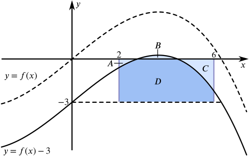

If you know that the area of the shaded region is 40 square units, which of the following can you evaluate?
A summary of the integrals and their values is provided below:
Integral
Value
∫62(f(x)+5)dx
60
∫62(f(x)−3)dx
28
∫40f(x+2)dx
40
∫62f(x+2)dx
?
∫84f(x+2)dx
?
∫62−f(x)dx
−40
∫62f(−x)dx
?
We can consider each in turn to understand how these values can be calculated.
f(x)+5 represents a vertical translation of the original function by 5 units ‘upwards’. In the following diagram the light blue ‘portion’ still represents 40 square units. The darker blue rectangle represents the additional area which can be calculated as 5×4.
The sum of these two ‘portions’ gives us the value of the integral ∫62(f(x)+5)dx.
Notice that if we had thought algebraically we might have considered the integral as a sum of two functions, leading us to re-write it as
∫62(f(x)+5)dx=∫62f(x)dx+∫625dx.
This of course produces the same result: the sum of the original area, ∫62f(x)dx=40, and the rectangle, ∫625dx=20.
f(x)−3 represents a vertical translation of the original function by 3 units ‘downwards’. However, because we don’t know the ‘height’ of the maximum in this region, a translation ‘downwards’ could result in one of these four images.

Does it matter which of the four images is correct in this scenario?
Will each image give a different result?
We will consider the first image in more detail.
In this case the area of the light blue ‘portion’ represents the value of the integral ∫62f(x)−3dx.
The dark blue rectangle has an area of 3×4=12 square units.
The area of the light blue ‘portion’ can now be written as 40−dark blue=40−12=28 square units.
Now the second image.
In this case the value of the integral ∫62f(x)−3dx will be equal to the area of ‘portion’ A - the area of ‘portion’ C. (From now on we will use A to represent the area of ‘portion’ A and similarly for B and C.)
The area of ‘portion’ B can be written in two ways: 40−A or 12−C.
If we equate these two expressions then we have 40−A=12−C which can be rearranged to provide the value of the integral
∫62f(x)−3dx=A−C=40−12=28.
Can you apply a similar method to evaluate the integral using the final two diagrams?
What do you notice about the result from the final (bottom right) diagram?
Can you explain why this diagram is NOT actually a possible representation of f(x)−3?
Notice that once again, if we had thought algebraically we might have considered the integral as a sum of two functions, leading us to re-write it as
∫62(f(x)−3)dx=∫62f(x)dx−∫623dx.
This of course produces the same result: the sum of the original area, ∫62f(x)dx=40, and the rectangle, −∫623dx=−12.
f(x+2) represents a horizontal translation of the original function by 2 units to the left.
The shaded region under the curve has also been translated so that it lies between x=0 and x=4.
The value of the integral ∫40f(x+2)dx is equal to the area of the light blue ‘portion’.
This is very similar to the previous integral. The function itself has once again been translated horizontally 2 units to the left. However, the region that we are looking at has not changed. Given that we do not know what the original function f(x) is, we are now looking at a region for which we do not have enough information. We cannot even determine the precise position of the x-intercept in this region.
All we can say is that the area is likely to be less than the original 40 square units given that we now have a negative component.
This is very similar to the previous integral. The function itself has once again been translated horizontally 2 units to the left. In addition to this, the region that we are looking at has changed. Given that we do not know what the original function f(x) is, we are now looking at a region for which we do not have enough information. We cannot even determine the precise position of the x-intercept in this region.
We now have a much larger negative component to the integral which suggests that this value will be less than 40 square units and less than the integral above in the region x=2 to x=6. The image suggests that the value will in fact be negative given that the negative portion appears much larger than the positive portion.
It is worth noting that if the integral had instead been given as ∫84f(x−2)dx then we would be able to evaluate it in exactly the same way as for ∫40f(x+2)dx.
−f(x) represents a reflection in the x-axis. The area of the region is preserved but the value of the integral is now negative as the region lies below the x-axis.
If we had taken an algebraic approach here we might have remembered that the integral could be re-written as
∫62−f(x)dx=−∫62f(x)dx.
f(−x) represents a reflection in the y-axis. The area of the reflected region, between x=−6 and x=−2, is preserved but the area in the original region is now unknown. If we knew something about the symmetry properties of the original function f(x) then we might be able to deduce something about this area. If f(x) has rotational symmetry about the origin then we could deduce that the integral will take the same value as for the curve −f(x) described above.
We cannot even meaningfully sketch this transformation because the original image doesn’t show the part of the curve between x=−6 and x=−2.
Notice that this means that we could evaluate the integral ∫−2−6f(−x)dx.
Can you find the value of the constant k for which
∫62(f(x)+k)dx=0
For the integral to equal 0, we need to introduce a negative component. In order to do this we need to translate the curve ‘downwards’ such that we achieve a situation like this, in which the area under the curve located ‘above’ the x-axis is equal to that ‘below’ the x-axis. This in turn means that k will be negative.
We have a maximum of three portions to consider. In the diagram shown, the area of ‘portion’ B must be equal to the sum of the areas of ‘portions’ A and C.
From now on we will use A to represent the area of ‘portion’ A, B to represent the area of ‘portion’ B, etc.)
The value of the integral ∫62(f(x)+k)dx will be equal to B−(A+C).
The area of ‘portion’ D can be written in two ways: 4|k|−(A+C) or 40−B.
In this approach we have chosen to think about areas of ‘portions’ of the diagram. This means that even though k must be negative (by our own initial reasoning), we will use the magnitude of k (its positive value) for area calculations.
|k| denotes the magnitude of k.
Equating these two expressions we have D=4|k|−(A+C)=40−B and rearranging we find that
B−(A+C)=40−4|k|.
In this instance we want the integral to equal 0 so we can write
0=40−4|k|
and therefore
|k|=10.
We know that k is in fact negative given the set up of our diagram and therefore ∫62f(x)−10dx=0.
As in our approach to some of the original integrals, it may be worth noting that an algebraic approach here will also work. Re-writing the integral as
∫62(f(x)+k)dx=∫62f(x)dx+∫62kdx=0
enables us to see that ∫62kdx=−40.
Proceeding with the integration we then find that 4k=−40 and therefore k=−10 as before.